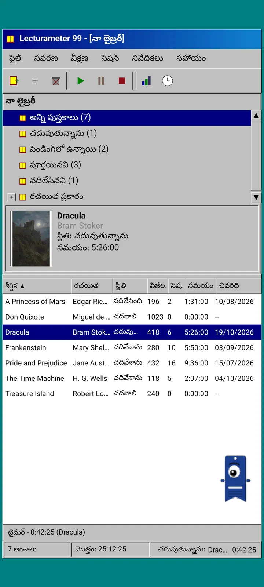
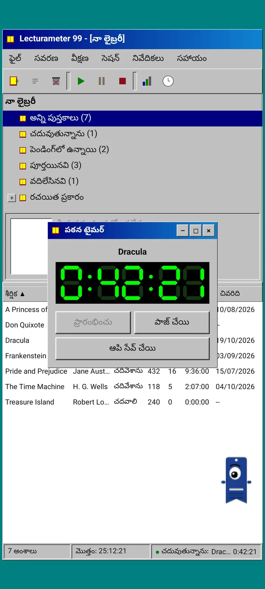
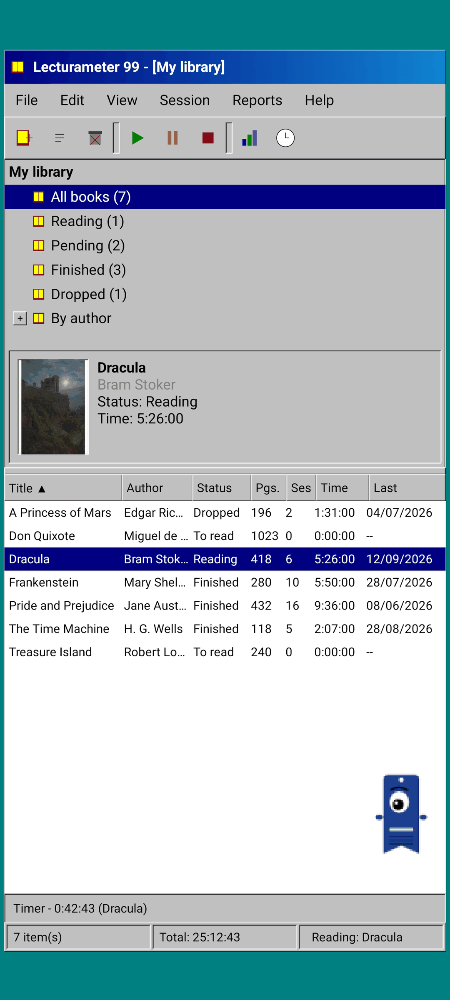
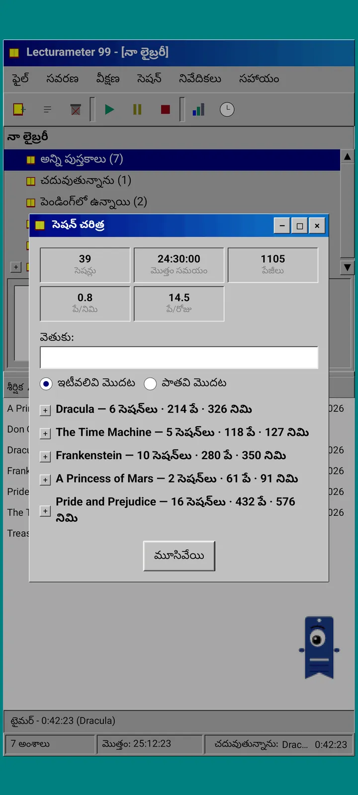
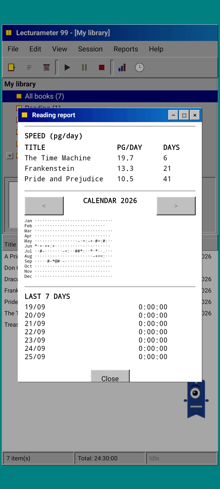
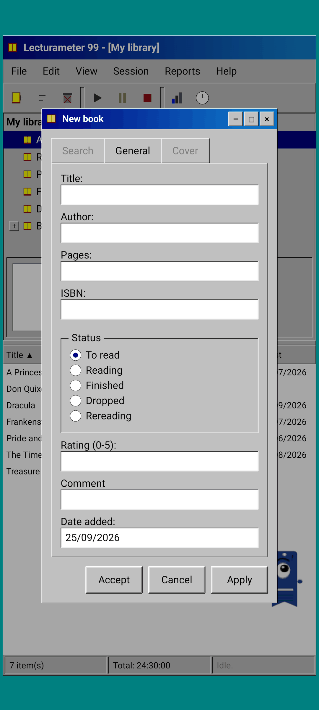
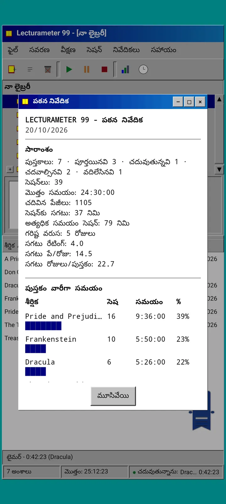

బ్లాగ్ · 2026-09-24
Lecturameter 1999: Lecturameter ఒక పాత PC ప్రోగ్రామ్ అయితే ఎలా ఉండేది?
విండోలు, మెనూలు, పట్టికలు మరియు LCD టైమర్తో, మీ నిజమైన బ్యాకప్లను తెరిచే ప్రత్యామ్నాయ Lecturameter క్లయింట్. ఇది ఎలా పుట్టింది, ఇందులో ఏముంది, ఉద్దేశపూర్వకంగా ఏమి వదిలేసింది. Play Store మరియు App Store లో ఉచితంగా రాబోతోంది.
Lecturameter 1999 కొన్ని నెలలుగా తయారవుతోంది. తొందర లేకుండా, ప్రణాళిక లేకుండా, అక్కడక్కడ ముక్కలు ముక్కలుగా దీన్ని నిర్మించాను. iOS వెర్షన్ నేను ఊహించినదాని కంటే సులభంగా ఉండి, దీన్ని పూర్తి చేయడానికి నాకు అవకాశం ఇచ్చిందని చూసిన తర్వాతే దీనిపై సీరియస్గా దృష్టి పెట్టాను.
ఇది ఒక్కటే ప్రయోగం కాదు. Lecturameter విశ్వంలోని ఇతర ప్రాజెక్టులు కూడా నా మనసులో ఉన్నాయి, కొన్ని బాగా ముందుకు వెళ్లినవి, మరికొన్ని ఇప్పుడే మొదలైనవి. వాటిలో చాలావరకు బహుశా ఎప్పటికీ వెలుగు చూడవు.
ఇది ఎక్కడి నుండి వచ్చింది?
నేను కొంతకాలంగా చుట్టూ తిరుగుతున్న ఒక ప్రయోగంతో అంతా మొదలైంది.
ఆలోచన ఏమిటంటే, Lecturameter ను పూర్తిగా భిన్నమైన డిజైన్ ఆవరణల కింద, మొదటి నుండి, చాలాసార్లు మళ్లీ నిర్మించడం. అసలు యాప్ను ముట్టుకోకుండా, దాన్ని భర్తీ చేసే ఉద్దేశం లేకుండా. ఏడు వెర్షన్లు వచ్చాయి. ఒకటి 2016 నాటి Android యాప్ను అనుకరించింది, మరొకటి 2036 లో ఎలా ఉంటుందో ఊహించింది, ఇంకొకటి లైబ్రరీని చదివే కొద్దీ వెన్నులు మందంగా అయ్యే పుస్తకాల అరగా మార్చింది, మరొకటి రెండు స్క్రీన్లు ఉన్న హ్యాండ్హెల్డ్ కన్సోల్ కోసం రూపొందించబడింది.
నాకు అన్నింటికంటే నచ్చింది 1999 వెర్షన్. తొంభైల చివరి నాటి డెస్క్టాప్ ప్రోగ్రామ్: దట్టంగా, ఉపయోగకరంగా, అంతా విండోలు, మెనూలు మరియు పట్టికలలో. దీన్ని సరదా అభ్యాసంగా, కొద్దికొద్దిగా పూర్తి చేసి, కింద నిజమైన Lecturameter డేటాతో సంపూర్ణ క్లయింట్గా మార్చాలని నిర్ణయించుకున్నాను.
ఇది ఏమిటి?
Lecturameter 1999 అనేది Lecturameter నుండి వేరుగా ఉండే స్వతంత్ర యాప్. దీన్ని తెరిచినప్పుడు నీలాకుపచ్చ డెస్క్టాప్ మీద పెద్దదిగా చేసిన ఒకే విండో కనిపిస్తుంది. పైన టైటిల్ బార్ మరియు మెనూలు ఉంటాయి: ఫైల్, సవరించు, వీక్షణ, సెషన్, నివేదికలు మరియు సహాయం. వాటి కింద పిక్సెల్ ఐకాన్లతో టూల్బార్. మధ్య భాగం రెండుగా విభజించబడింది: లైబ్రరీ చెట్టు మరియు కవర్తో ప్రివ్యూ పేన్, మరియు ప్రతి పుస్తకానికి ఒక వరుసతో పట్టిక. అడుగున స్టేటస్ బార్లో అంశాల సంఖ్య, మొత్తం సమయం మరియు మీరు చదువుతున్న పుస్తకం ఉంటాయి.



Lecturameter లోని అదే డేటా
ఈ ప్రయోగాన్ని ఉపయోగపడేదిగా మార్చేది ఈ భాగమే. 1999 పై పొర కింద నిజమైన Lecturameter డేటా మోడల్ ఉంది, యథాతథంగా కాపీ చేయబడింది: అవే పుస్తకాలు, అవే సెషన్లు, అవే స్థితులు, రేటింగ్లు మరియు నోట్స్. ఇది ఎగుమతి చేసే బ్యాకప్ Lecturameter ఎగుమతి చేసే అదే ఫైల్, ఇది దిగుమతి చేసుకునేది కూడా అదే.
ఆచరణలో దీని అర్థం, మీరు ఫైల్కు వెళ్లి మీ బ్యాకప్ను దిగుమతి చేసి మీ మొత్తం లైబ్రరీని 1999 పట్టికలో చూడవచ్చు. LCD టైమర్తో ఒక వారం చదవండి. ఎగుమతి చేయండి. కొత్త సెషన్లతో ఆధునిక యాప్కు తిరిగి వెళ్లండి, దారిలో ఒక్క ఫీల్డ్ కూడా కోల్పోకుండా. Goodreads CSV కూడా లోపలికి మరియు బయటికి వెళ్తుంది.
పుస్తక శోధన Lecturameter లో ఉన్నట్లే: యాప్ సొంత కేటలాగ్ మరియు Google Books ను అడిగి, శీర్షిక, రచయిత, పేజీలు, ISBN మరియు కవర్ను నింపుతుంది. కవర్ పోస్టర్ రూపంలోకి మార్చి, స్మూతింగ్ లేకుండా గీయబడుతుంది, కాబట్టి అది ఆ కాలపు GIF లా కనిపిస్తుంది.
సెషన్లు, చరిత్ర మరియు నివేదిక
చదివే ప్రవాహం Lecturameter దే, విండోలలోకి అనువదించబడింది. మీరు పట్టికలో ఒక పుస్తకాన్ని ఎంచుకుని ప్లే బటన్ నొక్కుతారు. టైమర్ విండో తెరుచుకుంటుంది, నలుపుపై ఆకుపచ్చ ఏడు-సెగ్మెంట్ డిస్ప్లేతో. మీరు దాన్ని కదపవచ్చు, టాస్క్బార్కు కుదించవచ్చు లేదా మూసివేయవచ్చు: సమయం స్టేటస్ బార్లో లెక్కిస్తూనే ఉంటుంది.
ఆపు నొక్కినప్పుడు, సెషన్ సేవ్ చేసే డైలాగ్ తెరుచుకుంటుంది: తేదీ, నిమిషాలు, మొదటి మరియు చివరి పేజీ, వ్యాఖ్య. మీరు టైప్ చేస్తున్నప్పుడే సారాంశం పేజీలను మరియు వేగాన్ని లెక్కిస్తుంది. పుస్తకం చివరి పేజీకి చేరుకుంటే, మీరు దాన్ని పూర్తి చేశారా అని అడుగుతుంది. మాన్యువల్ సెషన్లు సెషన్ మెనూ నుండి జోడించబడతాయి.
చరిత్ర సెషన్లను పుస్తకం వారీగా, ప్లస్ మరియు మైనస్ గుర్తులతో ఒక చెట్టులో సమూహపరుస్తుంది, పైన ఐదు గణాంకాలతో: సెషన్లు, మొత్తం సమయం, పేజీలు, నిమిషానికి పేజీలు మరియు రోజుకు పేజీలు. సెషన్ను సవరించడానికి రెండుసార్లు నొక్కండి, తొలగించడానికి ఎక్కువసేపు నొక్కండి.
గణాంకాలు అనేవి ఒకే వెడల్పు అక్షరాల్లో పఠన నివేదిక, ప్రింటర్ నుండి వచ్చినట్లు: పొడవైన పరంపర మరియు సగటు రేటింగ్తో సారాంశం, బ్లాక్ బార్లతో ప్రతి పుస్తకానికి సమయం, రోజుకు పేజీల్లో వేగం, ప్రతి రోజు చదివిన పేజీల ప్రకారం అక్షరాలతో గీసిన సంవత్సర క్యాలెండర్, మరియు చివరి ఏడు రోజులు.



Pagi 99
Pagi కూడా 1999 కు ప్రయాణిస్తుంది. అదే ఒంటి కన్ను బుక్మార్క్ సిల్హౌట్, కానీ పిక్సెల్ రూపంలో, ఆ కాలపు ఆఫీస్ అసిస్టెంట్ల లాగా స్క్రీన్ మీద స్వేచ్ఛగా తిరుగుతుంది. మీరు దాన్ని వేలితో లాగవచ్చు, నొక్కితే ఒక చిన్న మాట చెబుతుంది, మీరు చేస్తున్న దానిని బట్టి ముఖ కవళికలు మారతాయి: పుస్తకం కోసం వెతికేటప్పుడు ఆలోచిస్తుంది, టైమర్ నడుస్తున్నప్పుడు చదువుతుంది, సెషన్ సేవ్ చేసినప్పుడు లేదా పుస్తకం పూర్తి చేసినప్పుడు సంబరం చేసుకుంటుంది.
యాప్ చిట్కాలు Pagi కి అనుసంధానించబడిన పసుపు బుడగల్లో, ఒక్కొక్కటి ఒక్కసారి మాత్రమే కనిపిస్తాయి. వాటిని మళ్లీ చూడాలనుకుంటే, అవి సహాయం కింద, ఈ రోజు చిట్కాలో ఉన్నాయి.



ఏది బయట ఉంటుంది
Lecturameter 1999 ఉద్దేశపూర్వకంగా సరళమైనది. ఇది ఒక ప్రయోగం మరియు, సూత్రప్రాయంగా, విడుదల తర్వాత ఇంకా అభివృద్ధి ఉండదు. కొత్త ఫీచర్లు Lecturameter కే వస్తూ ఉంటాయి.
దీన్ని నిర్మిస్తున్నప్పుడు, చదివే ప్రవాహాన్ని ప్రభావితం చేయని ఏదైనా వద్దని నిర్ణయించుకున్నాను. అందుకే Lecturameter 1999 లో Pro లేదు. మీరు చూసేదే మీకు దక్కేది.
Lecturameter 1999, Lecturameter మద్దతిచ్చే ప్రతి భాషలో విడుదలవుతుంది.
ఎప్పుడు?
iOS కోసం Lecturameter మరియు వెర్షన్ 3.7 విడుదలైన తర్వాత, ఇది Play Store మరియు App Store లో ఉచితంగా వస్తుంది. ఇది పూర్తయి నా ఫోన్లో నడుస్తోంది. ప్రచురించే ముందు నా నిజమైన లైబ్రరీతో పరీక్ష మరియు చివరి వివరాలు మిగిలి ఉన్నాయి. అందుబాటులోకి వచ్చినప్పుడు ఇక్కడ, X లో మరియు Reddit లో ప్రకటిస్తాను.
ఈలోగా, Lecturameter ఇంకా Lecturameter నే, దాని థీమ్లు, ఛాలెంజ్లు మరియు Bingo తో. 1999 ఎడిషన్ అదే డేటాను చూసే మరో మార్గం.
వేచి ఉండగా, Android లో Lecturameter
చదవడం కొనసాగించండి: Lecturameter 1999 · చదివే సమయమా లేక పేజీలా · రీడింగ్ టైమర్